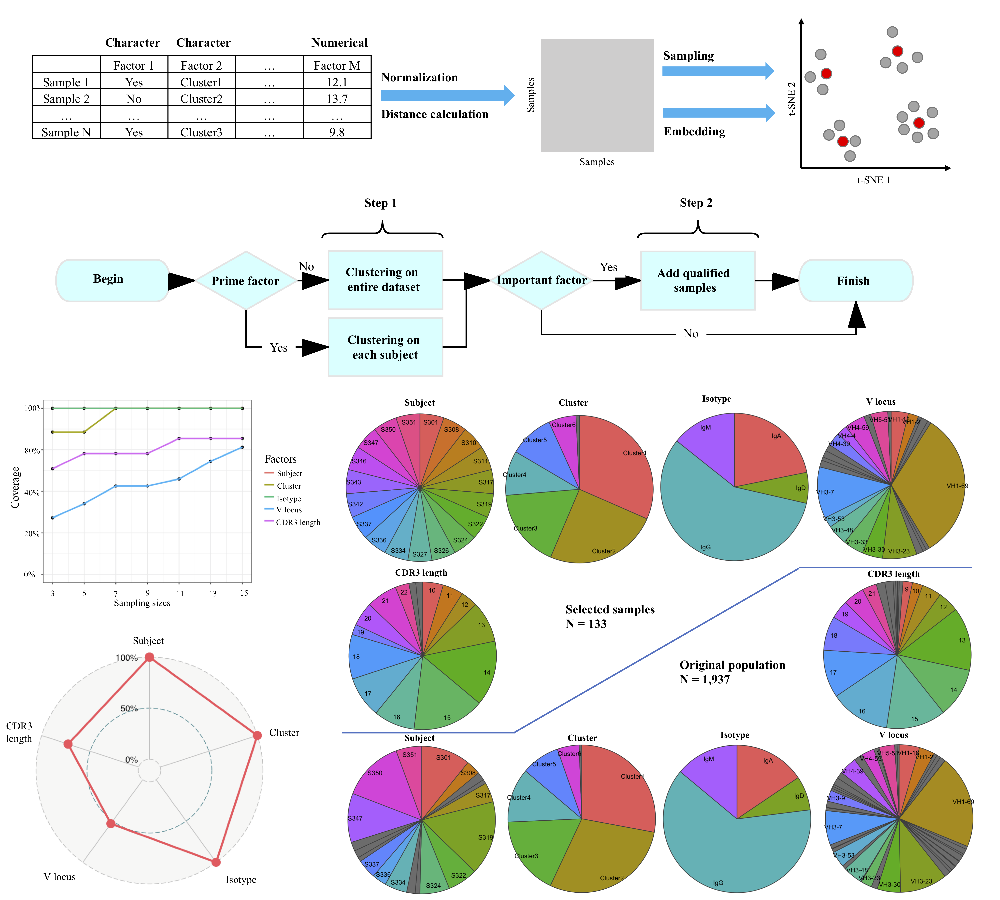

Cookie: representative samples selection from large population using k-medoids clustering
Motivation: Selecting representative samples with given properties is a critical step in the analysis of large scale clinical/experimental data. The conventional probability sampling methods/packages are not easily representative to population as well as generalizable to more complicated ensembles.
Results: In the following, we proposed an approach that is able to efficiently select the most representative samples from original population. This method quantifies the relationships among samples as pairwise distances by comparing their given properties. Then samples will be selected by k-medoids clustering based on the pairwise distances. This method is also computationally efficient in determining the appropriate sample size that balances representativeness and cost. We applied this method on a large single cell population, a simulated dataset and a viral sample dataset and achieved both representative results and optimized sample size. This method is universal and compatible with most of clinical/experimental data.
Code here: Github
